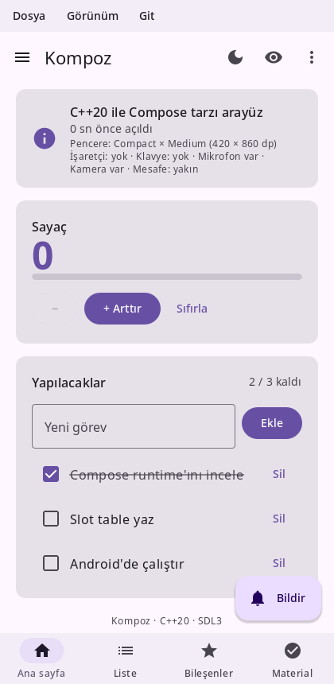
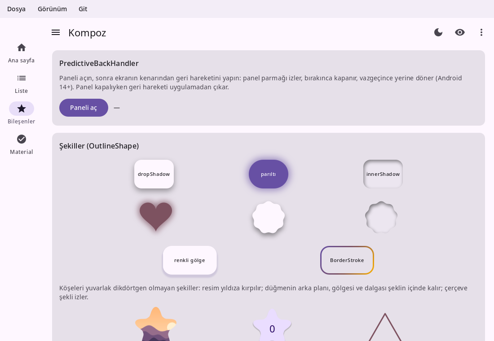

Kompoz documentation
Kompoz is a declarative UI library for C++20 in the style of Jetpack Compose, with Material 3 components, running on Linux, Windows, Android and the web from one codebase.
If you know Compose, you know Kompoz: the same way of thinking (composable functions, state, recomposition, modifiers), the same names where C++ allows, and Material 3 components that look and behave like Compose's. Version 0.1.0 is the first public release, licensed under the Apache License 2.0.

void Counter() {
auto count = remember([] { return mutableStateOf(0); });
Column(Modifier().padding(16), {.verticalArrangement = Arrangement::spacedBy(8)}, [&] {
Text("Count: " + std::to_string(count.get()), {.font = typography().titleLarge});
Button([count] { count.set(count.get() + 1); }, [] { Text("Add"); });
});
}
Application kompoz::createApplication(int, char**) {
return {.title = "Demo", .content = [] { MaterialTheme(lightColorScheme(), Counter); }};
}Get started
- Setup: build Kompoz, add it to your CMake project, and run on each platform.
- Tutorial: build a first app step by step, from a line of text to a Material list.
- Coming from Compose: how Kotlin's Compose maps to C++, at a glance.
Foundation
- Thinking in Kompoz: declarative UI, composable functions and recomposition.
- State: observable state,
remember,rememberSaveable, hoisting and state holders. - Lifecycle and identity: how calls are identified without a compiler plugin, and what makes them skip.
- Side effects: coroutines,
LaunchedEffect,DisposableEffectand the other effect APIs. - Phases: composition, layout and drawing, and how to keep each one cheap.
- CompositionLocal: handing values down the tree, and the built-in locals.
Design
- Modifiers: decorating composables, why order matters, and writing your own.
- Layouts:
Column,Row,Box, flow layouts,FlexBox,Gridand adaptive layouts. - Custom layouts:
Layout, constraints, intrinsics andSubcomposeLayout. - Lists and grids: lazy lists and grids, pagers, carousels and nested scrolling.
- Material components: a tour of the Material 3 components.
- Theming: color schemes, dark theme, dynamic color, typography and design systems.
- Text: styling text, fonts, selection and text fields.
- Graphics:
Canvas, brushes, paths, shapes, shadows, images and vectors. - Animation: animated values, visibility, content, transitions and shared elements.
- Gestures and input: clicks, drags, pinches, the keyboard, focus and drag and drop.
App
- Architecture: unidirectional data flow,
ViewModels, flows and saved state. - Navigation: screens, the back stack, typed routes and deep links.
- Resources: assets, the library's texts in the system language, and platform services.
- Accessibility: semantics, screen readers, touch targets and the keyboard.
- Testing: headless UI tests with a virtual clock.
- Tools: previews, rebuilding on save, scripted screenshots and profiling.
Reference
- API status: every Compose API and its status in Kompoz, and the build log.
